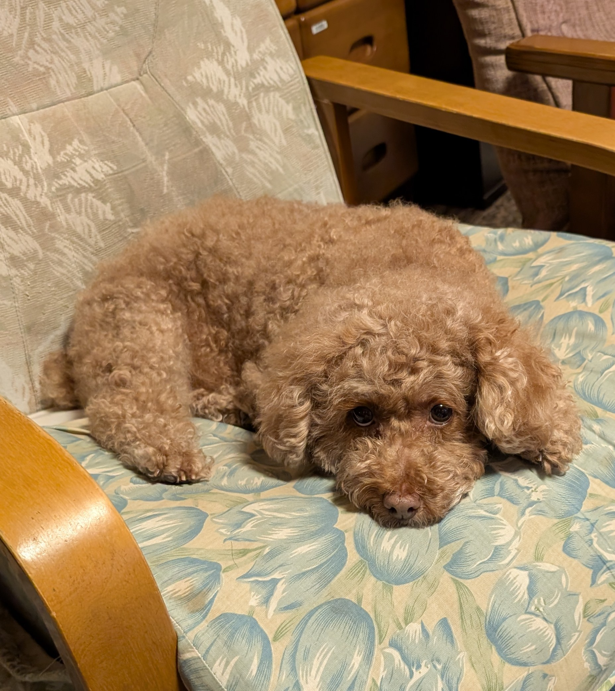

譲渡会で繁殖牝だった犬を引き取りました。
家の中ではお母さんにデレデレ！お母さんが帰ってくるとすぐに飛びついて大喜びします。餌をもらうとき以外は、基本的にずっとお母さんに甘えています。
でも、家族で外食に行った際には、おじいちゃんから「お土産」をもらうためにおじいちゃんにピッタリついていくという、ちゃっかりした可愛い一面もあります。
そして、サイト主が近づくと、いつも机の下に隠れて追いかけっこが始まります！